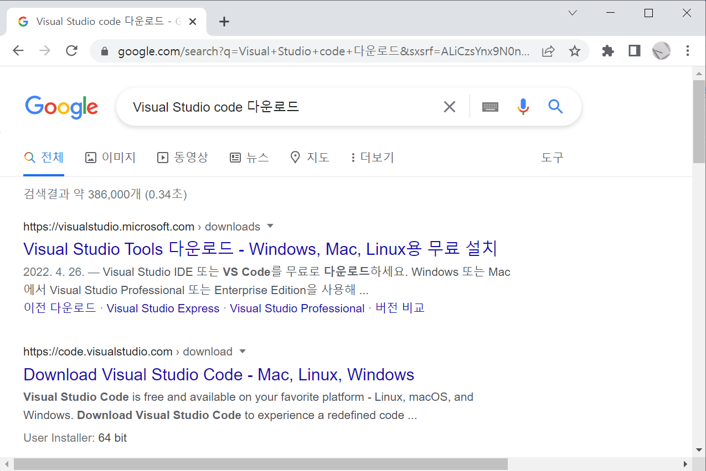

[기본환경] 01 Visual Studio Code 설치(1)
학습 목표
가. Window 환경에서 Visual Studio Code를 설치할 수 있다.
학습 내용
가. Visual Studio Code 설치
목차
Visual Studio Code 설치(1)
1-1 Visual Studio Code 다운로드
1-2 Visual Studio Code 설치
1-3 Visual Studio Code 실행
1-1 Visual Studio Code 다운로드
[사용 환경]
OS : Window 10
사용 프로그램 : 구글 Chrome 브라우저
01 프로그램 다운로드
'Visual Studio Code 다운로드' 검색 후, 프로그램을 다운로드를 합니다.
(그림 1-1-1 프로그램 다운로드)
시스템 환경에 따라 관련 프로그램을 다운로드 합니다. Window의 경우 Windows 버전을 다운로드 합니다.
'Windows' 선택 후, User Installer은 64bit를 선택했습니다.

(그림 1-1-2 프로그램 다운로드)

(그림 1-1-3 프로그램 다운로드)
원도우 탐색기를 선택 후, 다운로드를 선택하면 다운로드 된 프로그램을 확인할 수 있습니다. 이를 마우스 더블클릭 등으로 실행하여 설치를 진행합니다.
2022/05 기준으로 다운로드된 프로그램이름은 아래와 같습니다.
VSCodeUserSetup-x64-1.67.1.exe

(그림 1-1-4 프로그램 실행)
1-2 Visual Studio Code 설치
01 Visual Studio Code 설치
아래 설치 시, 여러가지 설정을 기본 설정으로 두고 설치를 진행하면 됩니다.
프로그램 설치시 볼 수 있는 일반적인 계약 내용입니다. 간단하게 확인 후, '동의합니다(A)'를 선택 후, '다음'을 선택합니다.

(그림 1-2-1 프로그램 설치)
설치 위치 지정합니다. 여유 용량이 적을 경우에 '찾아보기'를 선택해서 다른 곳에 설치를 할 수 있습니다.

(그림 1-2-2 프로그램 설치 위치 지정)
확인 후, '다음'을 선택합니다.

(그림 1-2-3 프로그램 시작 메뉴 지정)
확인 후, 변경사항이 없으면 '다음'를 선택합니다.

(그림 1-2-4 프로그램 설치)
확인 후, '설치'를 선택합니다.

(그림 1-2-5 프로그램 설치)
'설치'가 진행중입니다.

(그림 1-2-6 프로그램 설치)
설치가 완료되었습니다. 확인 후, '종료'를 선택합니다. 'Visual Studio Code 실행'이 체크가 된 상태로 종료를 누르면 프로그램이 실행이 됩니다.

(그림 1-2-7 프로그램 설치 완료)

(그림 1-2-7 프로그램 설치 후, 초기 실행화면)
1-3 Visual Studio Code 실행
01 Visual Studio Code 실행하기
다음과 같은 방법으로 프로그램의 실행이 가능합니다.
A. 시작 메뉴에서 직접 실행하기
B. 검색 후, 실행하기
여기에서는 검색 후, 실행을 해 보겠습니다.
02 Visual Studio Code 검색 후, 실행
검색창에 Visual Studio Code로 입력 후, 해당 되는 프로그램을 선택합니다.

(그림 1-3-1 검색 후, 프로그램 실행)
03 Visual Studio Code 실행 화면
다음과 같이 실행 화면을 확인할 수 있습니다.

(그림 1-3-2 프로그램 실행 화면)